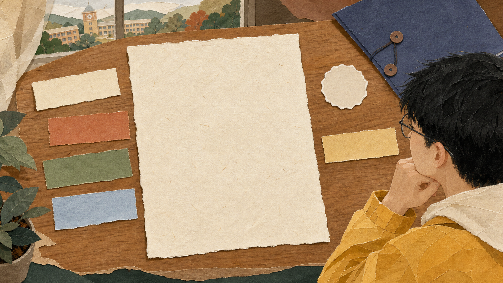

任务
当时要完成什么？先把场景和目标交代清楚。
我负责……劳有所获 · 职有底气
很多经历不是没有价值，而是还停在“我做过”。用四格翻译法，把一件普通小事说清楚、写具体、留得住。

先写清楚，再写漂亮。
01 / 四格方法
从事实出发，逐格回答“我做了什么、怎么做、带来什么、说明我会什么”。
当时要完成什么？先把场景和目标交代清楚。
我负责……你具体做了什么？写步骤、判断和调整，不只写“参与”。
我通过……事情发生了什么变化？只写可以回忆、可以核对的结果。
最后……这件事说明你会什么？从行为提炼能力，避免空泛标签。
这说明我能…… 一件小事，也可以拆出完整的行动链。
一件小事，也可以拆出完整的行动链。
02 / 真实示例
不急着把经历包装得很厉害，先把当时真实发生的事写下来。
为校园活动完成线下宣传。
活动前整理路线，现场根据人流调整点位，并说明活动流程。
留下可复盘的点位安排和现场沟通记录。
信息整理、现场判断与沟通表达。
有材料再写数字；没有核验的数字先不补。
03 / 写进简历
一条好的经历，不是形容词堆得多，而是读者能沿着你的事实，看见你如何做事。
组织校园活动宣传，依据人流与场地动线调整宣传点位，沉淀现场沟通与信息整理经验。
— 一句不夸大的经历表达
04 / 今晚十分钟
不等“更厉害的故事”。先从一件真实发生过的小事开始。
社团、兼职、志愿服务、课程作业都可以。
每格写 1—2 句，先记事实，不急着润色。
让行动、结果和能力彼此对应，再删掉夸张表达。